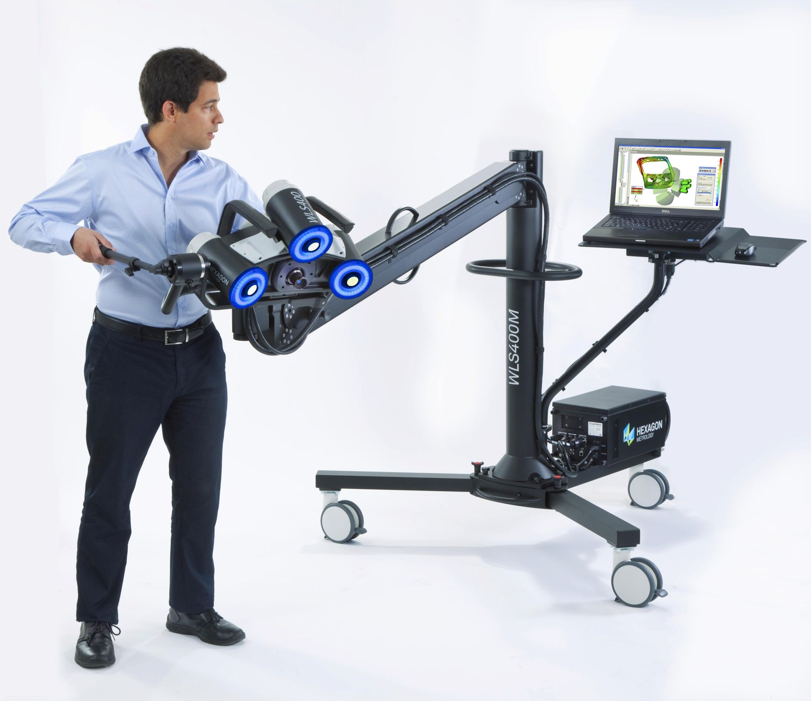
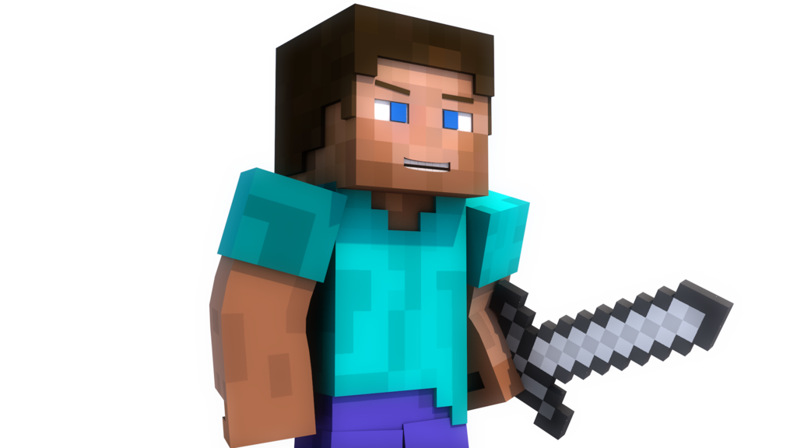

Что такое 3D?
3D (3-dimensional, 3 измерения) – имеет множество определений, и на компьютерном жаргоне может означать:
- объемный звук - объёмный, окружающий, приходящий со всех сторон звук
- 3d-шутер (игры) - жанр компьютерных игр, на общепринятом языке – стрелялки с объемным изображением (пример, CS GO)
- 3D-сканер - устройство, анализирующее физический объект и на основе полученных данных создающее его 3D-модель
 - 3D-принтер - устройство, использующее метод послойного создания физического объекта по цифровой 3D-модели

- трехмерная графика, о которой и пойдет речь
Трехмерная графика
Что такое трехмерная графика, и вообще, почему она называется трехмерной?
Трехмерная графика – это один из разделов компьютерной графики, в котором, при помощи целой системы различных инструментов изображают объемные объекты. Ниже, приведен пример художественного трехмерного моделирования
Так почему объемные объекты называют трехмерными? Потому что почти все объекты, окружающие нас в повседневной жизни имеют три основные характеристики: длина, высота и ширина.
Каждой из этих характеристик, в трехмерном моделировании, отводят одну из трех осей, которые обозначены как X, Y, Z.
Три оси – в данном случае это оси X, Y и Z – являются осями системы координат.
Система координат - система отсчета, используемая для определения положения объекта в пространстве, а также, помогающая отслеживать движение этого объекта.
Отметки 1а, 1б, и 1в показывают возможность вращения, изменения положения системы координат в пространстве. В графике, часто вращают не только сам объект относительно осей координат, но всю систему вращают относительно объекта.
Система координат используется также для определения направления движения того или иного объекта. Так Автомобиль … меняет своё положение относительно одной лишь горизонтальной оси, поднимающийся или опускающийся лифт – относительно вертикальной, а самолет, при наборе высоты, движется относительно двух осей сразу.
Примитивы
Что такое примитивы? По статистике учёных-языковедов, наиболее частые ассоциации, возникающие при слове «примитив» – это образ первобытного человека, образ пещерного человека, одетого в звериную шкуру и добывающего огонь при помощи кремня и кресала.
Иначе говоря, примитив в обыденном представлении – это нечто простое, слабо развитое или неразвитое вовсе
Примитив в понимании компьютерного моделирования – простейшие фигуры, объекты (кубы, цилиндры, конусы и т.д.), которые берутся за основу, в качестве болванок, заготовок из которых создается будущая модель.
Если обратить внимание на окружающие нас объекты, то можно заметить, что сложные, казалось бы, предметы – являются лишь совокупностью множества простейших фигур. Например, дом, бытовая техника, газетный киоск и многие другие. Даже люди, по сути – это совокупность большого количества простых элементов – примитивов.
Присмотрись к окружающим тебя объектам, и попробуй разбить их на простейшие фигуры.
Например, один из самых популярных игровых персонажей – Стив из «Minecraft» – состоит из нескольких параллелепипедов.
Практика 1
Разбор на примитивы
Выберите один из сложных (т. е. состоящих из нескольких примитивов) объектов на картинках ниже и разберите его составляющие.
Варианты для разбора:
- Танк
- Замок
- Самолет
Выпиши все примитивы, из которых он состоит (один примитив может повторяться). Объясни, как ты это сделал? Как примитивы видны на картинках?
Найди в интернете картинку сложного объекта, и разбери её на примитивы. Проведи с ним те же самые операции.
Практика 2
Даны три набора примитивов:
- Куб, цилиндр, пирамида.
- Цилиндр, шар, конус.
- Куб, шар, конус.
Выбери один из этих наборов примитивов (количество их не ограниченно), и смоделируйте из них один из объектов: танк, самолет или крепость. Каждый примитив в любом наборе может использоваться несколько раз.
SketchUp
Программа 3D-моделирования, создания скетчей и трехмерных набросков, основанная на нескольких инструментах:
- прямоугольник, окружность, дуга и линия (рисование плоскости)
- тянитолкай (преобразуем плоскость в объемный примитив)
- переместить (перемещение объекта)
- повернуть (поворот объекта)
- смещение (выделяет отдельную плоскость на объекте)
Данная программа используется для проектирования относительно простых трехмерных объектов, таких как: мебель, здания, интерьер квартиры или офиса и т.д.
При желании можно смоделировать небольшой и довольно простой город.
Скачать Sketch Up можно с официального сайта.
Для выполнения установки необходимо выполнить несколько шагов
1) Найди официальный сайт
2) Нажми кнопку загрузить
3) В выпадающем списке выбери "использование в образовательных целях"
4) Заполни все поля и нажми кнопку "Загрузить SketchUp"
Практика 3
Работа В SketchUp.
Изучение программы.
- Нажми на ярлык программы, при первом запуске нужно принять лицензионное соглашение, поставив галочку и нажав кнопку продолжить. Далее выбери шаблон, нажми на кнопку «Начать использование SketchUp»
- Далее, поскольку ты уже знаком с инструментами в SketchUp, построй самостоятельно ряд простейших объектов. Стоит обратить внимание на нижний правый угол, в котором обозначены измерения строящегося объекта
- Выбери инструмент «Прямоугольник» и построй квадрат, добиваясь, чтобы в строке «Измерения» величины сторон квадрата были равны. На самой же фигуре появится пунктирная диагональ, также, возле курсора появляется надпись «квадрат», как показано на рисунке
- Теперь, используя инструмент «Вдавить - выдавить», сформируй куб, ребро которого будет равно размеру стороны квадрата. Допускаются погрешности в 0,05 м.
- Проделай те же самые операции с цилиндром

- Работа с инструментом «дуга». Щелчком по правой кнопке мыши ставь на поле начальную точку. Далее протяни прямую и зафиксируй вторую точку. Далее, движением курсора редактируй саму дугу.
- Далее выбери инструмент «линия» и соедини ей начальную и конечную точки дуги.
- При помощи инструмента «Вдавить - выдавить» создай новую фигуру, как показано на рисунке
- Выбери инструмент «переместить». Проблем с перемещением цилиндра, и твоей последней фигурой возникнуть не должно, перемещение же остальных фигур может вызвать затруднения. Для куба, например, перед перемещением, необходимо выделить весь куб, при помощи инструмента «выделить», и после, применять инструмент «переместить».
Вот, собственно, все основы программы SketchUp.
Практика 4
Используя SketchUp, построить лабиринт, с входом, выходом, и множеством коридоров. Подсказка: Для более удобной работы, стоит использовать примитив куб, деформируя его, сужая, и расширяя где надо.
Практика 5
Выполняя практику 1, ты «собирал» из примитивов модель танка, самолёта или крепости. Построй свой объект теперь в «SketchUp», применяя полученные знания об этой программе.
Домашнее задание
Используя простые инструменты, попробуй сделать своб комнату (без деталей)